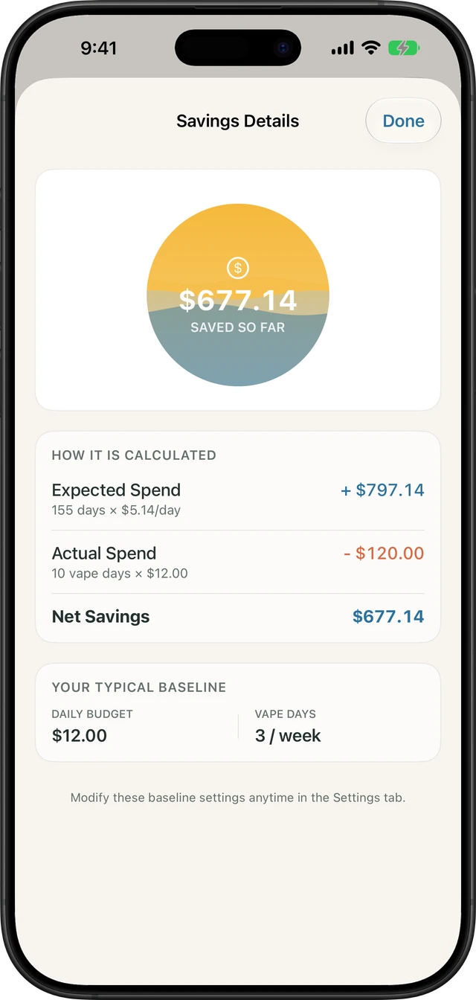

When you purchase a $20 to $25 disposable vape every few days, the expense feels negligible in the moment. Unlike monthly rent or car insurance, nicotine purchases mimic modern micro-transactions: small, friction-free taps of your debit card that bypass your brain's financial alarm system. Over weeks and months, however, disposable vaping quietly becomes one of the largest discretionary drains on your bank account.
Understanding your exact numbers does more than balance your budget—it provides an immediate psychological dopamine replacement during withdrawal. Below is the real cost breakdown across usage levels, hidden indirect costs, and a compound savings roadmap.
| Vaping Frequency & Device | Weekly Cost | Monthly Spend | 1-Year Direct Savings | 5-Year Compound Growth (8% Return) |
|---|---|---|---|---|
| Light Vaper 1 pod pack or 1/2 disposable per week |
$10 – $15 | $45 – $65 | $520 – $780 | $3,280 – $4,920 |
| Moderate Vaper 1 disposable per week (e.g. Geek Bar Pulse, Elf Bar) |
$20 – $25 | $85 – $110 | $1,040 – $1,300 | $6,560 – $8,200 |
| Frequent Vaper 2 disposables per week (common for 5% nic salt users) |
$40 – $50 | $175 – $215 | $2,080 – $2,600 | $13,120 – $16,400 |
| Heavy / Chain Vaper 3+ disposables per week or constant pulse-mode use |
$65 – $85+ | $280 – $370+ | $3,380 – $4,420+ | $21,300 – $27,880+ |
Why Disposables Are a Modern Micro-Transaction Trap
A decade ago, early vaping setups relied on refillable sub-ohm tanks and 60mL e-liquid bottles that cost pennies per milliliter. Today, the market is overwhelmingly dominated by closed-system 50mg nicotine salt disposables (Geek Bar, Elf Bar, Lost Mary, Raz). While marketed with astronomical "15,000 to 25,000 puff" claims, modern disposables are engineered for rapid turnover:
- Premature Coil & Battery Burnout: In dual-mesh and "boost/pulse" mode devices, coils burn or batteries degrade well before the advertised e-liquid capacity is exhausted. Most daily users discard devices 2 to 3 days earlier than projected.
- The Frictionless Corner Store Habit: Convenience stores and smoke shops position colorful vape displays right at checkout. Most vapers rarely leave with just a vape; each trip frequently includes an energy drink, bottled soda, or snacks, quietly adding $5 to $10 in ancillary friction costs per visit.
- Hidden Excise Vapor Taxes: Several US states and cities levy wholesale or retail vapor taxes between 10% and 40%, inflating a $16 sticker price to $23 to $26 at checkout.
Built into Quit Vaping
Calculate your pod & disposable savings down to the cent
Tell Quit Vaping how much your vape costs and how long it lasts. Watch your daily and yearly bank balance climb in real time—100% private and offline on iOS.
Track Your Savings Live on iOS →
The Hidden Indirect Expenses You Save When You Quit
Direct device purchases represent only part of the financial toll. When you eliminate vaping, several secondary budget drains vanish immediately:
- Dental Bills & Enamel Repairs: Aerosolized vegetable glycerin (VG) and propylene glycol (PG) adhere to tooth enamel, promoting Streptococcus mutans bacterial colonization. Meanwhile, nicotine vasoconstriction starves gum tissue of oxygen, leading to periodontal pocketing and costly dental cleanings.
- Emergency Panic Purchases: Every vaper knows the dread of a dead device at an airport, music festival, or late at night. Panic buys at specialized venue kiosks or 24-hour bodegas often carry predatory markups of $35 to $45 per bar.
- Device Misplacement Loss: Compact disposables frequently slide between car seats, gym lockers, or couch cushions. Replacing lost devices prematurely adds an estimated $120 to $250 annually for the average user.
Tangible Milestones: What Your Vape Savings Actually Buy
Abstract numbers on a spreadsheet rarely stop a craving. Translating your saved cash into concrete milestones transforms your quit journey into an exciting financial upgrade:
- 7 Days Smoke-Free ($35 to $60 Saved): A celebratory dinner at a favorite restaurant or two tickets to a weekend movie.
- 30 Days Smoke-Free ($150 to $250 Saved): High-end noise-canceling earbuds, a full tank of gas, or your monthly internet and utility bill paid in full.
- 90 Days Smoke-Free ($450 to $750 Saved): A weekend getaway Airbnb trip, a full year gym membership, or high-performance running shoes.
- 1 Year Smoke-Free ($1,800 to $3,000 Saved): A round-trip flight to Europe or Japan, an upgraded MacBook, or fully funding your emergency savings buffer.
- 5 Years Smoke-Free ($15,000+ Compounded): A 20% down payment on a new vehicle, closing costs on a home, or a massive jump-start toward retirement independence.
Using Financial Wins to Crush Nicotine Cravings
During the first two weeks of quitting, your brain's dopamine baseline drops as acetylcholine receptors await natural regulation (see our 72-hour physical recovery timeline). This neurological dip is what triggers brain fog, irritability, and restlessness (read our dopamine reset guide).
Tracking your money saved in real time acts as a powerful behavioral counterweight. Watching your savings counter tick up by pennies every few minutes provides a steady, tangible source of achievement. When acute cravings strike, reminding yourself that taking a single puff resets hundreds of dollars in hard-earned progress helps you practice urge surfing until the craving wave crests and fades.